Learning outcomes
- Build dynamic, tool-using agents in LangGraph that reason and adapt based on context.
- Design multi-agent systems for task coordination and role-based collaboration.
- Implement the Model Context Protocol (MCP) for seamless integration with remote services.
- Ensure production readiness using persistent memory, safety guardrails, and observability.
Topics
Autonomous Agents, Tool Use, LangGraph Decision Loops, Multi-Agent Orchestration, MCP, Memory, Guardrails, Traceability.
1. From Workflows to Autonomous Agents
This module synthesizes previous concepts into fully capable agents that can think, decide, and act. The focus shifts from static, predefined flows to dynamic systems that utilize tools, interpret intermediate results, and adapt their execution paths based on real-time context.
1.1 Dynamic Decision-Making and Multi-Agent Systems
Beyond baseline automation, advanced architectures enable agents to coordinate across specialized roles. Task routing and collaborative problem-solving are implemented to scale single-agent capabilities into complex multi-agent ecosystems.
1.2 Ecosystem Integration via MCP
Connecting agents to external services is facilitated through the Model Context Protocol (MCP). This protocol allows agents to discover and utilize remote tools with the same ease as local functions, fostering interoperability across diverse AI services without the overhead of custom integrations.
1.3 Ensuring Production Readiness
Transitioning from prototype to production requires a focus on reliability and safety. Key technical requirements include:
- Persistent Memory: Maintaining long-term context across user interactions.
- Safety Guardrails: Enforcing operational boundaries and preventing unintended agent behaviors.
- Observability: Ensuring full traceability for debugging and performance optimization.
2. Core Concepts: Tools and Agent Reasoning
Transitioning from static workflows to autonomous agents requires a fundamental shift in how the system interacts with external capabilities. Instead of hardcoded API calls, agents use tools to dynamically extend their abilities beyond text generation.
2.1 Defining Tools and the ReAct Pattern
A tool is any external function, service, or capability that an LLM can invoke through a standardized protocol. Tools allow the model to run code, query databases, or call third-party APIs by passing structured inputs and receiving structured outputs.
This dynamic interplay is often implemented via the ReAct (Reasoning and Acting) pattern. ReAct enables the agent to interleave reasoning steps ("thoughts") with tool invocations ("actions"), allowing the system to decompose complex tasks and adapt based on intermediate results.
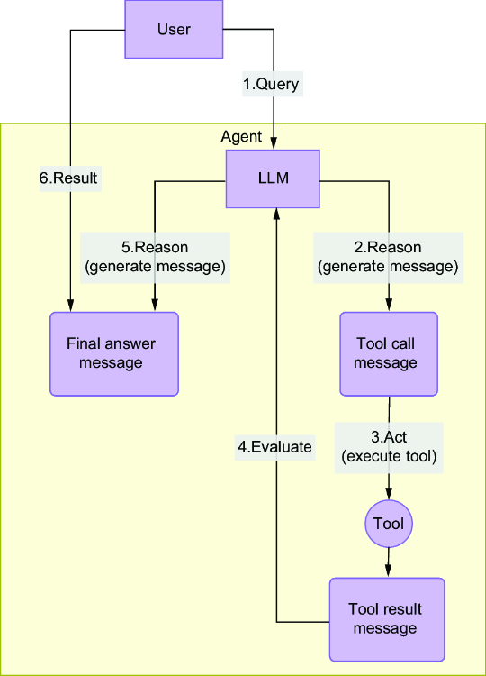
Reference: The ReAct pattern was introduced in the paper "ReAct: Synergizing Reasoning and Acting in Language Models" by Yao et al. (2022).
2.2 Tool Registration and LLM Binding
To enable an agent to utilize a tool, the capability must be registered with the LLM. This process involves exposing the tool's function signature (name and parameters) and a detailed textual description. Modern models are explicitly trained to recognize these schemas and decide at runtime when a tool call is necessary.
In the LangChain/LangGraph ecosystem, this is typically handled in two steps:
- Definition: Using the
@tooldecorator to wrap a Python function. The decorator automatically extracts the function's docstring as the tool's description and infers the parameter schema. - Binding: Using the
.bind_tools()protocol to attach the tool definitions to the LLM instance. This informs the model of the available tools and their usage constraints during the generation process.
2.3 Technical Implementation: The @tool Decorator
The primary method for defining tools in LangChain is the @tool decorator. In Python, a decorator is a higher-order function that takes another function as an argument and extends its behavior without explicitly modifying its source code.
Python Decorator Fundamentals
Syntactically, decorators are applied using the @ symbol. Below is a simplified example of a decorator that logs function calls:
def log_call(func):
def wrapper(*args, **kwargs):
print(f"Executing: {func.__name__}")
return func(*args, **kwargs)
return wrapper
@log_call
def get_status():
return "System Operational"
# Calling get_status() will print "Executing: get_status"
# and return "System Operational"The @tool Mechanism
The @tool decorator leverages Python's introspection capabilities to convert standard functions into structured tool schemas. When applied, it automatically extracts metadata to inform the LLM's reasoning engine:
| Python Metadata | Tool Schema Component | Purpose for LLM |
|---|---|---|
| Function Name | name |
Identifies the specific tool in the LLM's response. |
| Docstring | description |
Informs the model's decision on when to utilize the tool. |
| Type Hints (Arguments) | parameters |
Defines the JSON schema for valid tool inputs. |
Best Practice: Because the LLM relies entirely on the description to select tools, docstrings must be highly descriptive and clearly state the tool's utility and operational constraints.
3. Managing Agent State
In a Reasoning-Action loop, the system must maintain a continuous record of the conversation, including user queries, model thoughts, and tool responses. In LangGraph, this is managed through a central Agent State.
3.1 Defining the AgentState
The AgentState is typically defined as a TypedDict. It serves as the "source of truth" for the graph, ensuring that every node has access to the accumulated context and can contribute new information to the sequence.
from typing import Annotated, Sequence
from typing_extensions import TypedDict
from langchain_core.messages import BaseMessage
import operator
class AgentState(TypedDict):
# Use Annotated and operator.add to append new messages
# to the existing history instead of overwriting them.
messages: Annotated[Sequence[BaseMessage], operator.add]The Role of Reducers
In the example above, operator.add acts as a reducer. Reducers define how state updates are merged. By using Annotated with an addition operator, the graph automatically accumulates messages as they flow through different nodes, building a complete history of the interaction.
Documentation: For advanced state management and custom reducer logic, refer to the official LangGraph StateGraph concepts and state definition guides.
4. The Tool Execution Phase
The tool execution phase is the critical link between the LLM's reasoning and real-world action. In this stage, the system processes the model's intent and transforms it into executable code calls, updating the conversation state with the results.
4.1 Logical Flow of Execution
A standard tool execution node follows a specific sequence to ensure robustness and traceability:
- Inspection: The node examines the most recent message in the
AgentState(typically anAIMessage). - Extraction: It identifies the
tool_callsproperty, which contains the name of the tool and the arguments generated by the model. - Invocation: The corresponding Python function is invoked with the provided arguments.
- Wrapping: The function's output is wrapped in a
ToolMessage, which includes thetool_call_idto link the result back to the model's request. - State Update: The
ToolMessageis appended to the message sequence, providing the LLM with the context needed for its next reasoning step.
4.2 Prebuilt ToolNode
While tool execution can be implemented from scratch, LangGraph provides a robust, prebuilt implementation called ToolNode. This component handles the extraction and parallel invocation of tools automatically, ensuring consistent message formatting and error handling across different LLM providers.
Efficiency: Using ToolNode simplifies graph construction and allows the agent to execute multiple independent tool calls in a single turn, significantly reducing latency in complex reasoning tasks.
5. Assembling the Agent Graph
With the tools defined and the state management in place, the final structural step is to assemble the individual components into a cohesive Directed Graph. In LangGraph, each node represents a specific logic unit (e.g., an LLM processor or a tool executor).
5.1 Registering Graph Nodes
Nodes are registered using the StateGraph.add_node() method. This links a unique string identifier (the node name) to a specific Python function or runnable.
from langgraph.graph import StateGraph, START, END
# Initialize the graph builder with the AgentState schema
builder = StateGraph(AgentState)
# Register the LLM node for reasoning
builder.add_node("llm_node", llm_node_function)
# Register the tools node for execution
builder.add_node("tools", ToolNode(TOOLS))5.2 The LLM Node: Coordinating Reasoning
The LLM node is the central "brain" of the agent. Its primary responsibility is to receive the current AgentState, invoke the model, and decide the next course of action:
- Initial Request: If the user has just asked a question, the LLM determines if external tools are required to formulate an answer.
- Reactive Logic: If the state contains results from previous tool calls, the LLM integrates this new context and decides whether to produce a final response or request additional actions.
The model's response is returned as an AIMessage, which can either contain the final text answer or the tool_calls metadata for the next node in the graph.
5.3 Defining Edges and Control Flow
Edges represent the possible flow of control between nodes. Every LangGraph must define an entry point from the START node and at least one path leading to the END node, which signifies the completion of the agent's task.
# Set the entry point to the reasoning node
builder.add_edge(START, "llm_node")
# Standard edges represent fixed transitions
# (e.g., after executing tools, always return to the LLM for reasoning)
builder.add_edge("tools", "llm_node")5.4 Conditional Logic and Dynamic Routing
The core of an autonomous agent's power lies in its ability to choose its own path. In LangGraph, this is implemented via conditional edges. A specialized router function (typically tools_condition) examines the LLM's last output to determine the next step.
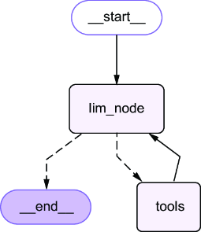
END node if a final answer is ready.The logic follows two primary branches:
- If
tool_callsexist: The graph routes the flow to the"tools"node for execution. - If no tool calls exist: The flow is directed to
END, terminating the process and delivering the final answer to the user.
6. Executing the Agent Chatbot
The final step in building an agent-powered system is implementing the user interface. A common pattern is the Read-Eval-Print Loop (REPL), which continuously accepts user input, processes it through the agent graph, and returns the response until the session is terminated.
6.1 Implementing the Chat Loop
In a typical implementation, each user input is wrapped in a HumanMessage and passed as the initial state to the agent's .invoke() method. The loop then extracts the final message from the resulting state to display back to the user.
def chat_loop():
print("Agent Assistant (type 'exit' to quit)")
while True:
user_input = input("You: ").strip()
if user_input.lower() in {"exit", "quit"}:
break
# Initialize state with the user's message
state = {"messages": [HumanMessage(content=user_input)]}
# Invoke the compiled agent graph
result = agent.invoke(state)
# Retrieve and print the final response
print(f"Assistant: {result['messages'][-1].content}\n")6.2 Initial Agent Run
In the first functional version of the agent, the system is equipped with a single Vector Search Tool. This allows the agent to reason about a user's travel query and decide when to query the knowledge base for specific destination details.
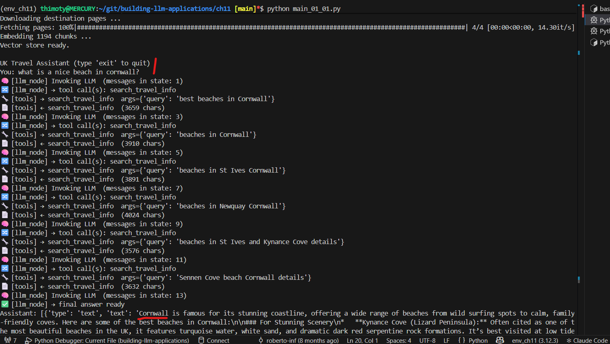
6.3 Observing Agent Execution with LangSmith
For production-grade agents, visibility into the internal reasoning-action cycle is essential. LangSmith provides a comprehensive tracing interface that captures every node execution, tool invocation, and state transition within the graph.
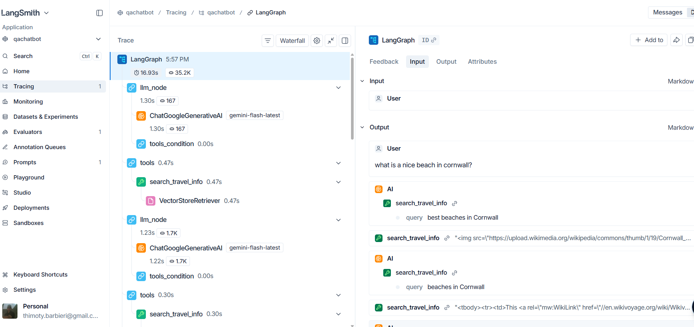
Traceability: Tracing allows developers to debug complex loops, identify where the model might be failing to call the correct tool, and optimize prompt performance based on real-world interaction logs.
6.4 Deep Dive: The ReAct Loop
The agent implements the ReAct (Reasoning + Acting) pattern, following a cyclic execution path: llm_node → tools → llm_node → tools → ... → END. The LLM does not generate a response immediately; it first reasons about the user's intent, invokes the necessary tools, evaluates the results, and determines if it has gathered enough context to finalize the answer.
Decision Logic: The Role of tools_condition
The flow is governed by the tools_condition function. This utility inspects the latest message in the graph's state:
- Emitted
tool_calls: The graph routes back to thetoolsnode for execution. - No
tool_calls: The graph routes toEND, signaling that the reasoning phase is complete.
Analyzing a Multi-Step Search Sequence
In Figure M5.4, the LLM performed six consecutive searches. This thoroughness is driven by the model's objective to gather precise data before committing to an answer. Below is a breakdown of the observed reasoning steps:
| Step | Generated Query | Observed Behavior |
|---|---|---|
| 1 | "best beaches in Cornwall" | Initial broad information gathering. |
| 2 | "beaches in Cornwall" | Query reformulation to capture missing results. |
| 3 | "beaches in St Ives Cornwall" | Narrowing scope to a specific coastal town. |
| 4 | "beaches in Newquay Cornwall" | Exploring another key geographic area. |
| 5 | "beaches in St Ives and Kynance Cove" | Retrieving granular details for identified hotspots. |
| 6 | "Sennen Cove beach details" | Final verification search for specific amenities. |
| 7 | — | Confidence threshold reached; generates Final Answer. |
Controlling Iterations: To prevent excessive tool calls or infinite loops, you can enforce a recursion_limit during invocation: agent.invoke(state, config={"recursion_limit": 5}).
7. Scaling to Multi-Tool Agents
Production agents often require access to multiple specialized capabilities. Extending an agent's toolkit involves not only adding new functions but also refining how the LLM perceives and chooses between available tools.
7.1 Integrating API-Based Tools
While semantic search provides historical or curated context, many tasks require real-time data. Adding an API-based tool (e.g., a weather service) allows the agent to synthesize answers that combine static knowledge with dynamic conditions.
@tool
def weather_forecast(town: str) -> dict:
"""Get a real-time weather forecast for a given town."""
# Logic to call an external Weather API
return {"town": town, "weather": "sunny", "temp": 24}
# Toolkit expansion
TOOLS = [search_travel_info, weather_forecast]
llm_with_tools = llm.bind_tools(TOOLS)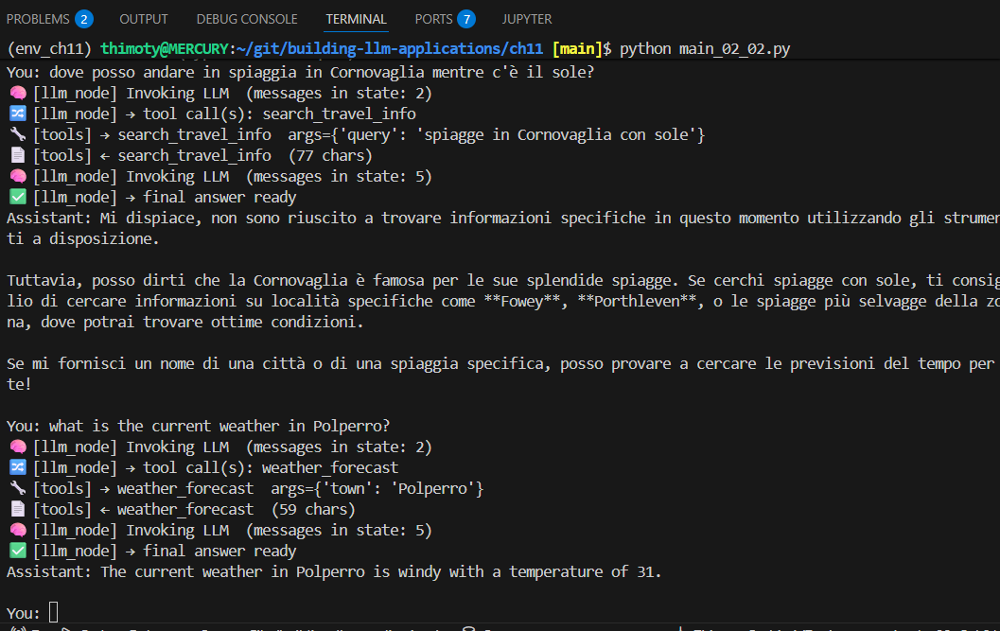
weather_forecast tool over the static knowledge base.7.2 Optimizing Tool Selection with Descriptions
By default, the @tool decorator uses the function's docstring as the description. However, for complex multi-tool scenarios, you can use the description parameter to explicitly guide the LLM's choice, providing clearer instructions on when each tool should be utilized.
| Tool Name | Optimized Description | LLM Guidance |
|---|---|---|
search_travel_info |
"Search travel information about destinations in England." | Directs the model to this tool for general knowledge and location details. |
weather_forecast |
"Get the weather forecast, given a specific town name." | Ensures the model uses this tool only when numerical or condition data is requested. |
7.3 Refining the System Prompt
To prevent the LLM from relying on its internal pre-trained knowledge (which may be outdated or inaccurate), the system prompt must be updated to enforce tool-first behavior. This ensures the agent retrieves grounded information before answering.
Example Prompt: "You are a helpful assistant that can search travel information and get the weather forecast. Only use the tools provided to find the information you need (including town names). Do not rely on your internal knowledge."
7.4 Model Capabilities and Tool Orchestration
The success of multi-tool orchestration depends heavily on the underlying LLM's reasoning depth. While smaller local models (e.g., ollama:e2b) can often handle single tool calls, they may struggle to chain multiple tools or decompose complex questions into sequential actions.
Advanced models like Google Gemini demonstrate superior performance in these scenarios, successfully combining results from diverse sources (such as curated travel data and live weather APIs) to produce a unified, context-aware response.
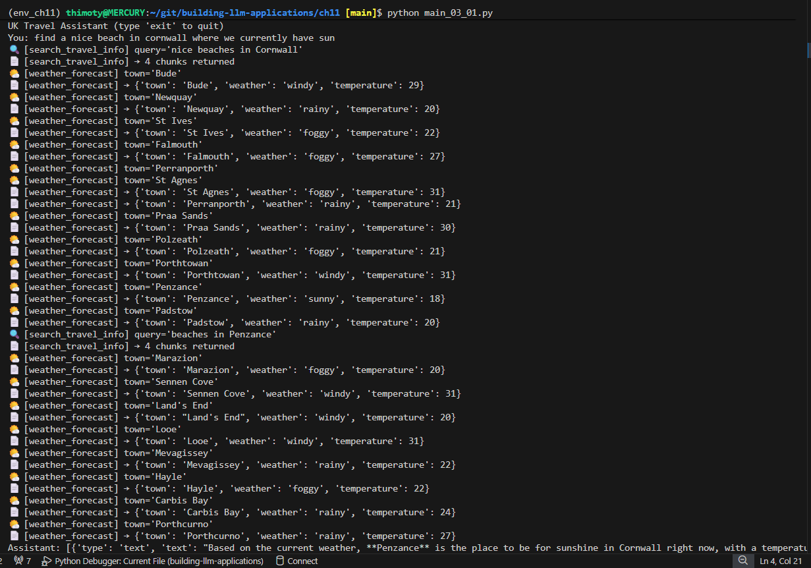
8. Simplifying with LangGraph Prebuilt Components
While building agents from scratch provides deep control and understanding, production development often benefits from higher-level abstractions. LangGraph offers prebuilt components that encapsulate standard orchestration logic, significantly reducing boilerplate code.
8.1 Refactoring with create_react_agent
The create_react_agent constructor replaces manual node registration, tool binding, and conditional edge wiring with a single instantiation call. This ensures your agent follows a standardized, well-tested ReAct interaction pattern.
from langgraph.prebuilt import create_react_agent
# High-level agent construction
agent = create_react_agent(
model=llm_model,
tools=TOOLS,
state_schema=AgentState,
prompt="""You are a helpful assistant..."""
)Key Simplifications:
- Internal Binding: The model automatically binds the provided tools without requiring explicit
.bind_tools()calls. - Automated Orchestration: All internal nodes (LLM, ToolNode) and conditional routing (
tools_condition) are managed internally. - Managed State: High-level agents can utilize managed attributes like
RemainingStepsto prevent infinite loops and manage recursion limits effectively.
8.2 Handling API Rate Limits (429 Errors)
In production environments, and especially during agentic loops, you may encounter the 429 RESOURCE_EXHAUSTED error. This occurs when the number of requests or tokens exceeds the provider's quota. Because agents often perform multiple iterations per user query, they can exhaust limits much faster than standard chatbots.
Mitigation Strategies:
- Exponential Backoff: Implement a retry mechanism that waits progressively longer between attempts.
- Recursion Limits: Strictly enforce
recursion_limitin theinvokeconfig to prevent runaway loops. - Model Tiering: Use faster, higher-quota models (e.g., Gemini Flash) for intermediate reasoning steps and reserved "Pro" models for final synthesis.
Implementation Tip: Use the tenacity library to wrap tool calls or LLM invocations with robust retry logic, ensuring the agent can recover gracefully from transient rate limit hits.
9. Scaling to Router Architectures
As agent capabilities grow, single-agent systems often become overly complex. By integrating diverse resources—such as local databases and external REST APIs—the architecture must evolve into a Router-based multi-agent system.
9.1 Coordinating Specialized Agents
In a router architecture, a top-level Router Agent acts as a dispatcher, directing queries to the most appropriate specialist agent (e.g., a Travel Information Specialist or an Accommodation Booking Specialist).
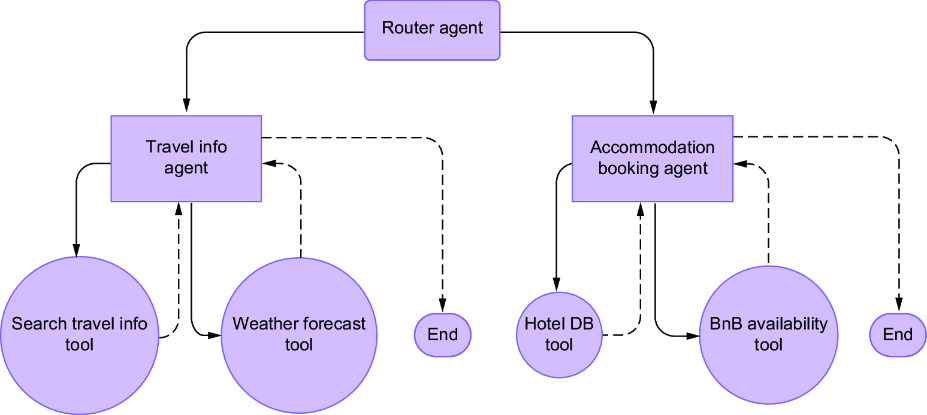
This approach offers several technical advantages:
- Modularity: Each specialist agent is developed and tested independently with its own set of tools and prompts.
- Accuracy: Narrowing the context reduces the risk of tool-selection errors and hallucinations.
- Scalability: New capabilities can be added as new specialized nodes without redesigning the entire graph.
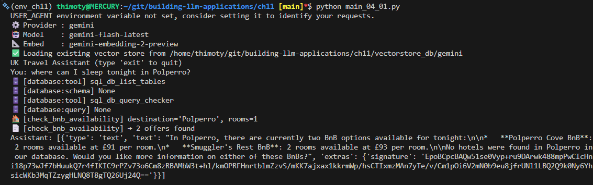
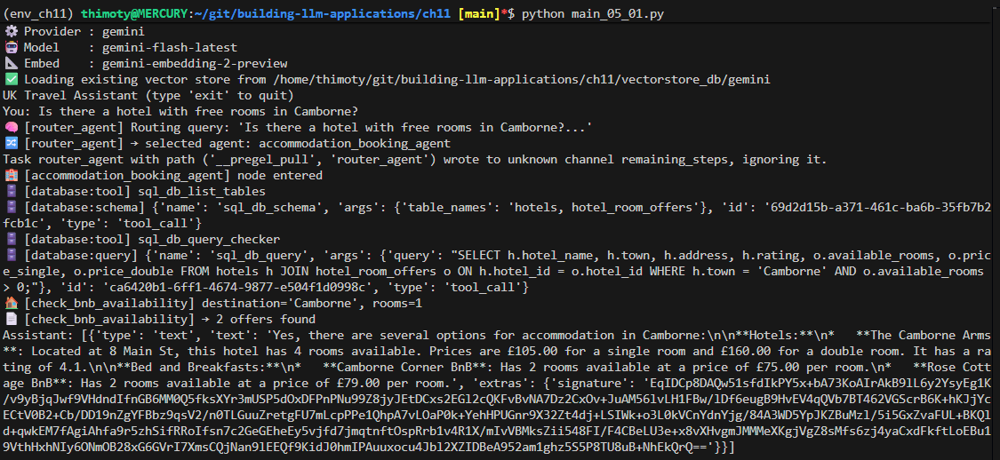
9.2 Router Logic and One-Way Routing
A fundamental characteristic of the router design is that each user query takes a one-way ticket through the workflow. The router performs a clean handoff, ensuring the selected specialist responds directly to the user before the process terminates.
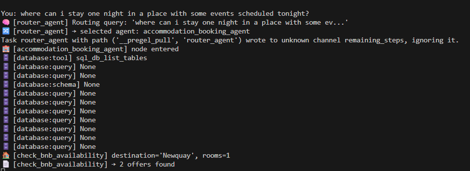
For example, the system distinguishes between distinct intents:
- "What are the main attractions in St Ives?" → Routed to Travel Information Specialist.
- "Are there any rooms available in Penzance?" → Routed to Accommodation Booking Specialist.
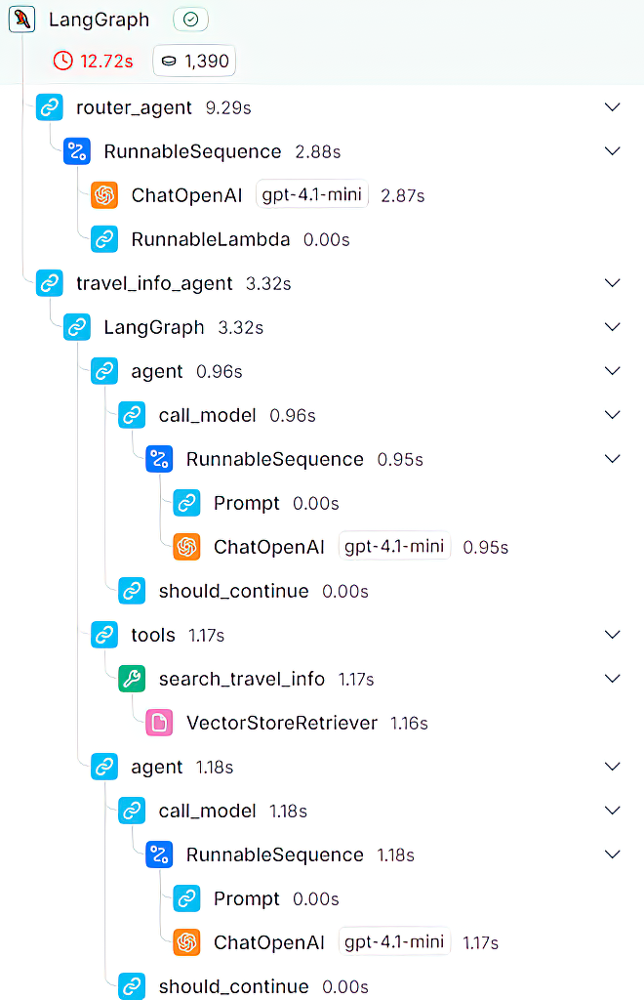
10. The Supervisor Pattern
While router architectures excel at simple intent classification, they struggle with queries that span multiple specialized domains. To address this, the architecture evolves into the Supervisor Pattern, moving from a "one-way ticket" to a "return ticket" approach.
10.1 The Return Ticket Logic
In the Supervisor pattern, a central orchestration node manages a group of workers. After a worker completes its task, it returns control to the Supervisor instead of finishing the interaction. This enables iterative, multi-step problem solving.
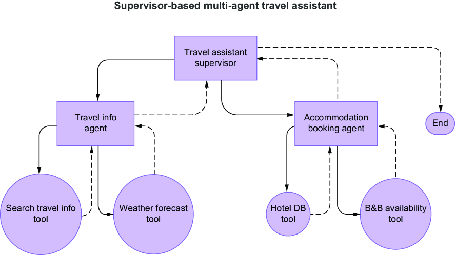
Advantages of the "return ticket" approach:
- Domain Blending: Handles complex queries like "Find a sunny town and book a hotel there" by sequencing multiple specialists.
- Iterative Refinement: The Supervisor can ask a worker to refine results that don't fully satisfy the user's multi-part intent.
- Shared Context: The Supervisor maintains the high-level state, ensuring context gathered by one worker is available to others.
10.2 Supervisor Collaboration in Action
In a production environment, the Supervisor manages the complexity of multi-step reasoning. When faced with a request involving destination research, weather validation, and booking availability, the Supervisor sequences these tasks across the specialized worker pool.
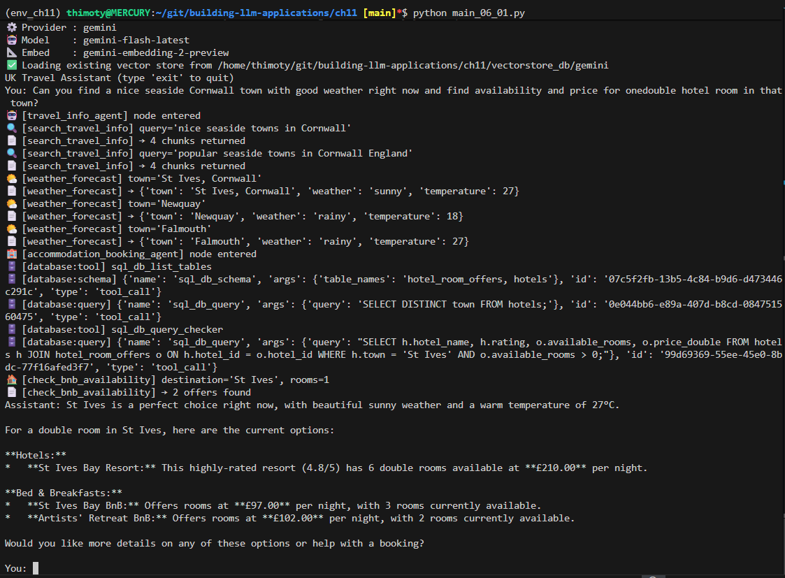
10.3 Model Constraints in Multi-Agent Reasoning
The effectiveness of the Supervisor pattern is significantly influenced by the underlying LLM's reasoning depth. While advanced models like Gemini can autonomously coordinate complex interactions, smaller local models often struggle with high-level orchestration.
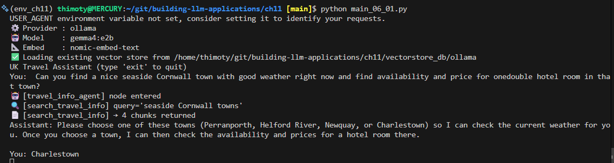
11. Connecting to the AI Ecosystem: Model Context Protocol (MCP)
Modern AI agents depend on external context—databases, APIs, and specialized services. Traditionally, each integration required a custom wrapper, leading to duplicated effort and inconsistent protocols. The Model Context Protocol (MCP), introduced by Anthropic, provides an open standard to solve this challenge.
11.1 Standardizing Context Integration
MCP allows context providers to expose their data and services through a universal interface. Instead of developers writing ad hoc tools for every new service, they can use standardized MCP Servers that agents can discover and utilize as seamlessly as local functions.
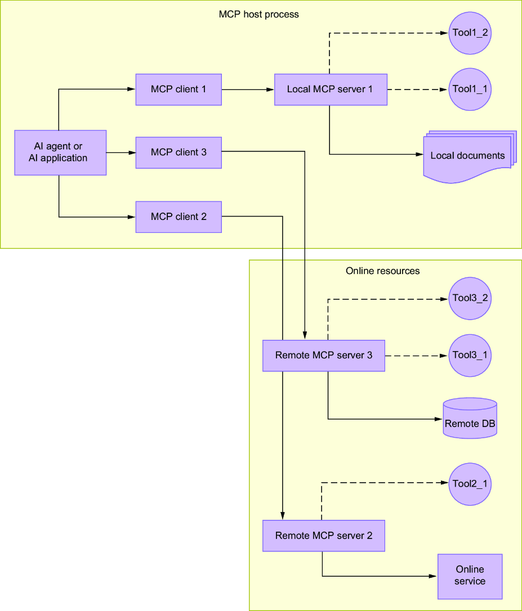
The Context Integration Problem at Scale
Without a standard like MCP, each new data source (weather APIs, document stores, search engines) requires a dedicated integration effort. This fragmented approach limits the scalability of agents and complicates the maintenance of complex multi-agent systems.
Reference: Explore official documentation and implementation guides at the Anthropic MCP Portal.
11.2 The Growing MCP Ecosystem
The interoperability of MCP has fostered a rapidly expanding ecosystem of servers and tools. Agents can now draw from a shared library of capabilities, whether they are community-driven or officially supported by major service providers.
| MCP Portal | Description |
|---|---|
| Anthropic Official Servers | GitHub repository listing official and community-tested MCP servers. |
| mcp.so | A community-driven directory featuring over 16,000 servers. |
| Smithery.ai | A curated portal featuring thousands of MCP-compliant tools and integrations. |
| mcpservers.org | A collaborative collection of over 1,500 specialized MCP servers. |
11.3 Building and Deploying MCP Servers
Developing an MCP server involves exposing resources and tools through a standardized transport layer. While the protocol is technology-agnostic, it is essential to follow the foundational design principles to ensure broad interoperability across the ecosystem.
Essential Development Resources
- Official Hub: The modelcontextprotocol.io site is the starting point for architecture overviews, design principles, and tutorials.
- Protocol Specification: Detailed technical requirements, transport mechanisms, and security best practices can be found in the MCP Protocol Specification.
11.4 Simplifying with FastMCP
Implementing MCP from scratch is not recommended due to the complexity of the underlying message handling. Instead, developers should use high-level frameworks like FastMCP to streamline server creation.
FastMCP provides a Pythonic way to define tools and resources, handling the protocol's intricate details (like JSON-RPC serialization) automatically. Explore the FastMCP Getting Started Guide and the FastMCP GitHub Repository to begin building interoperable context providers.
Starting the MCP Server with FastMCP
Once implemented, the server can be launched using the fastmcp run command. This command initializes the server and makes its tools and resources available via the specified transport layer.
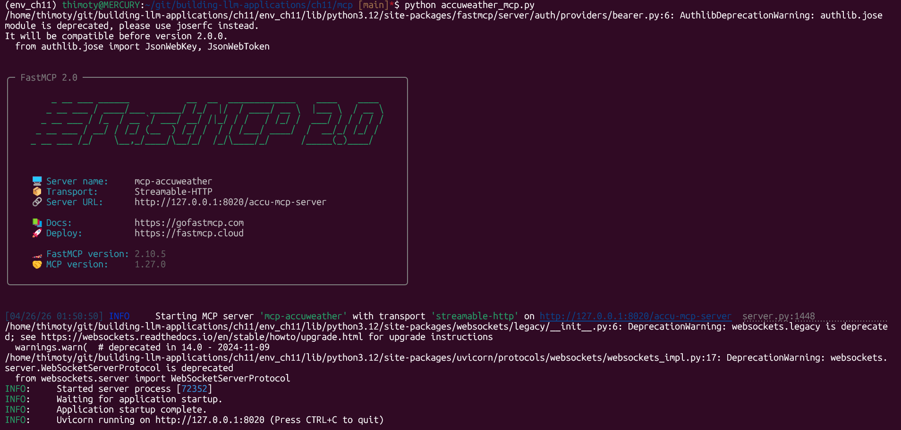
11.5 Capability Negotiation and Initialization
Before stateful communication begins, an MCP Client (Host) and Server perform a foundational handshake inspired by the Language Server Protocol (LSP). Using JSON-RPC 2.0, both parties negotiate their supported features to establish a compatible operational boundary.
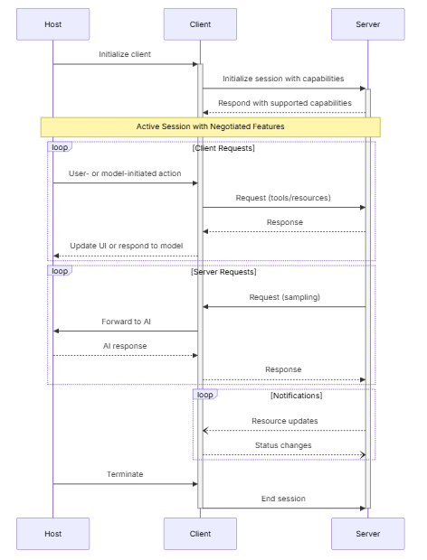
The Exchange of Capabilities
- Server Capabilities: The server declares support for Resources (contextual data), Prompts (templated interactions), and Tools (executable functions).
- Client Capabilities: The client informs the server if it supports Sampling (allowing the server to request LLM completions), Roots (defining filesystem or URI access), and Elicitation.
Significance: This negotiation ensures that the host understands exactly what tools are available, while the server knows which agentic behaviors the host permits, enabling truly composable AI workflows.
11.6 Practical Implementation: AccuWeather MCP Server
To ground these concepts, consider the transition from a mocked weather tool to a production-grade AccuWeather MCP Server. This involves claiming an API key from the AccuWeather portal, implementing the server logic via FastMCP, and exposing it through a standardized endpoint.
Testing with MCP Inspector
The MCP Inspector is an essential utility for interactive testing. It allows developers to connect to any MCP server, browse its tools, and run live queries without writing client-side code.
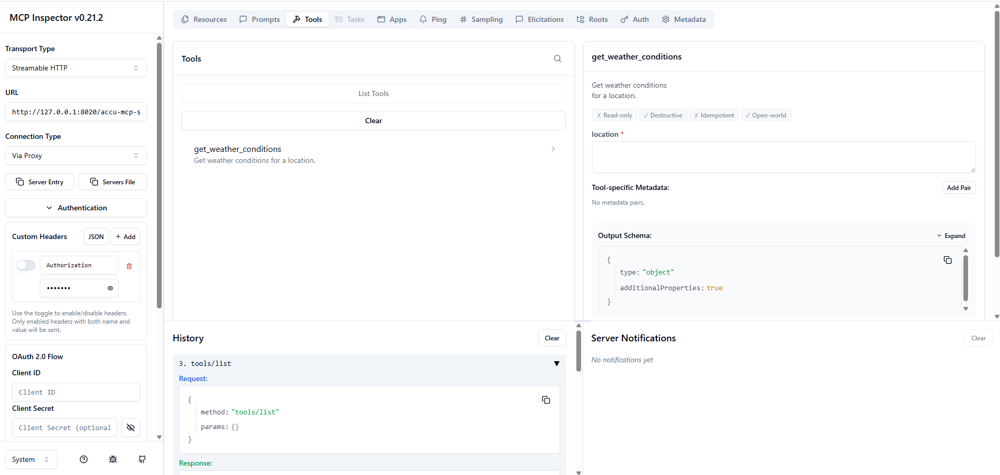
get_weather_conditions tool is correctly exposed and ready for consumption.Programmatic Consumption
Once verified, the server can be consumed by a test host (client). This confirms that the server is discoverable and responds correctly to tool calls, forming the final link in the interoperable agent chain.
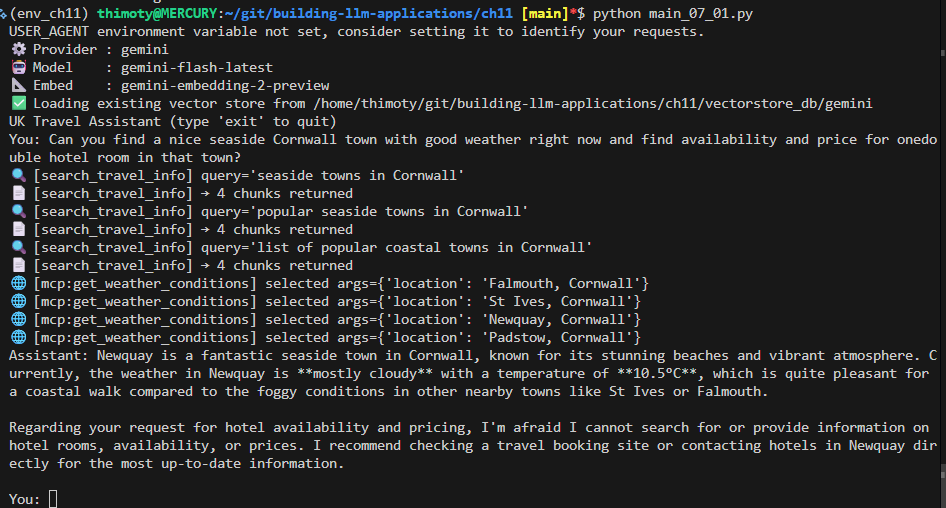
11.7 Integrating MCP Server Tools
A significant advantage of the Model Context Protocol is the ability to integrate remote server tools directly into your agent's capability pool. Instead of manually wrapping each API, you can programmatically discover and register all tools exposed by an MCP server, combining them with your local functions.
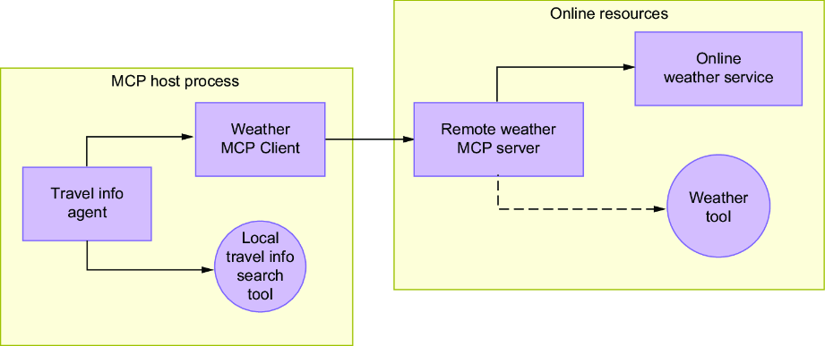
Combining Local and Remote Tools
The following code snippet demonstrates how to extend an agent's toolkit by merging local tools with those retrieved from an AccuWeather MCP server:
# Retrieve tools from the remote MCP server
accuweather_tools = await get_accuweather_tools()
# Combine local tools with remote MCP tools
tools = [search_travel_info, *accuweather_tools]
# Bind the expanded toolkit to the model
agent = create_react_agent(model=llm_model, tools=tools, ...)12. Productionizing AI Agents: Memory and Persistence
Building reliable AI agents for real-world environments requires more than just connecting models to tools. Production systems must maintain context across user interactions, handle edge cases gracefully, and remain resilient to interruptions. This stage of the development lifecycle focuses on memory and guardrails.
12.1 Short-Term Memory and Checkpoints
Without memory, every user interaction starts fresh, and the agent has no knowledge of past turns. This leads to inefficient and unnatural conversations. Short-term memory allows the system to retain context during a single session, enabling follow-up questions and multi-step reasoning.
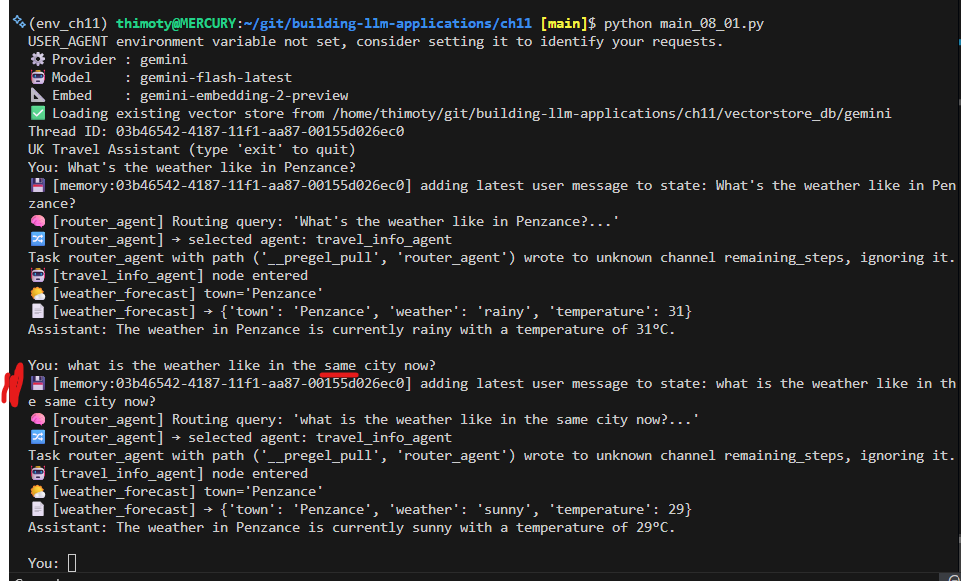
Types of Agent Memory
| Memory Type | Scope | Persistence | Example |
|---|---|---|---|
| Short-term | Single user session | Until session ends | Remembering "that hotel" in a follow-up query. |
| Long-term (User) | Across multiple sessions | Indefinite (weeks/years) | Remembering a user's preferred travel destinations. |
| Long-term (App) | Global (all users) | Ongoing | Storing general travel updates or seasonal schedules. |
12.2 Implementing Checkpoints in LangGraph
LangGraph manages memory through a powerful mechanism called checkpoints. A checkpoint is a snapshot of the graph's entire execution state taken after each node (super-step) is completed. This preserves conversation history, tool outputs, and intermediate variables.
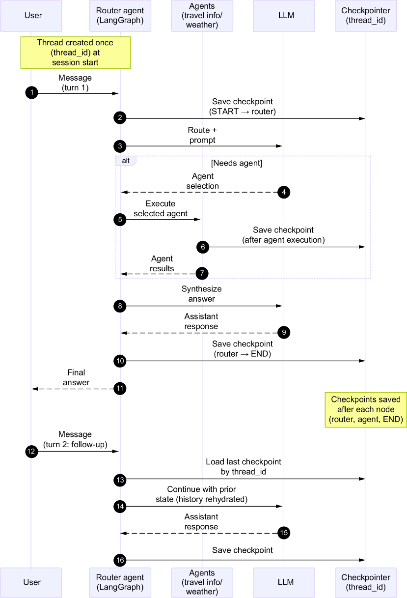
thread_id.This approach provides three critical production advantages:
- State Restoration: If an execution fails, the agent can resume from the last successful checkpoint without rerunning the entire process.
- Human-in-the-Loop: Workflows can be paused at a checkpoint for manual approval and then resumed using the stored state.
- Multi-Turn Context: Conversation history is automatically preserved across turns within a session (thread).
Guided lab
In this lab, you will implement a task-oriented travel agent using LangGraph, incorporating dynamic tool calling and stateful reasoning loops. You will evolve the implementation from a manual graph to a highly optimized multi-tool agent and finally explore multi-agent routing.
Access the implementation materials here:
- Initial Travel Agent - Manual Graph (main_01_01)
- Multi-Tool Agent - Guided Selection (main_02_02)
- Optimized Agent - Prebuilt Components (main_03_01)
- Accommodation Booking Agent (main_04_01)
- Multi-Agent System - Router Implementation (main_05_01)
- Multi-Agent System - Supervisor Pattern (main_06_01)
- AI Agent with MCP Ecosystem Integration (main_07_01)
- Production Agent - State & Memory Management (main_08_01)
Key takeaways
- Autonomy: Moving from fixed sequences to reasoning-based decision loops (LangGraph).
- Scalability: Utilizing multi-agent orchestration for complex, role-based tasks.
- Interoperability: Leveraging MCP to connect agents with a global ecosystem of tools.
- Operational Rigor: Implementing memory, guardrails, and tracing for resilient production systems.